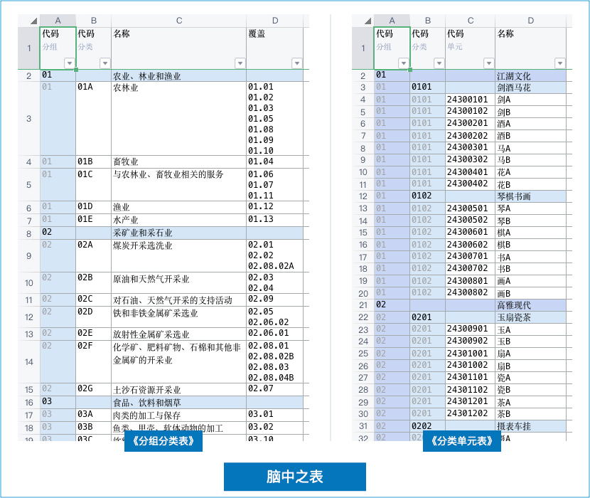
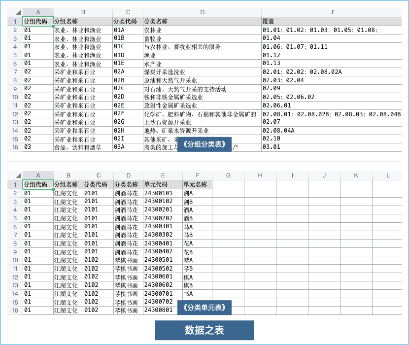
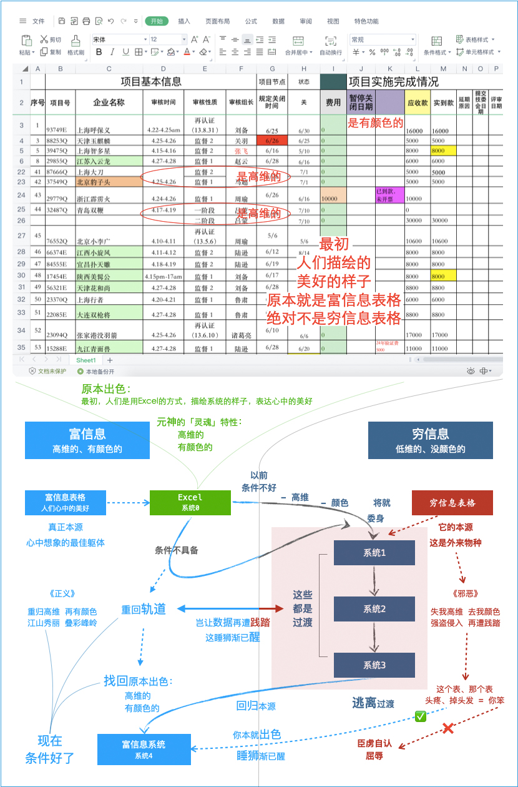

系统本贵，卿本高级
《系统本贵》 《等你觉醒》
盛世舞饭菜，正器尚无彩。 网速豪情，电脑神威。
大钱花到位，档次才上来。 系统当富，卿本高级。
盛世舞饭菜：时代变了，现在是盛世！吃饭吃菜之前，像帝王一样，有人跳舞助兴
正器尚无彩：正器，正用的器、指的是系统，尚无彩，还没有颜色、暗指不够高级
大钱花到位：你现在网速高不高，数据复杂度高不高，和时代适配，只能大钱到位
档次才上来：高配时代低配系统，档次永远在低档次，小系统不行，吞不下大时代系统当富：时代背景下，网速有豪情，电脑也有神威，系统应当使用富信息的系统
重点说说什么叫作「卿本高级」？
先谈两个基本概念「脑中表格」和「数据之表」
下面，体系认证以《分组分类表》为例，产品认证以《分类单元表》为例，阐述下需求与实现的偏差
「认证机构的技术人员」的剑锋所指和「开发系统的技术人员」的引弓所向，射箭靶心不一致的问题
如果让认证机构的技术人员，用 Excel 把他好理解的表格表达出来
就是说这个表要以后经常看，得和脑子里想的相对应，这样好理解
那么我想，Ta接近于下面的样子（这种好理解的，就叫：脑中之表）：

如果让开发系统的技术人员，用 Excel 把他容易做的表格表达出来
就是说这个表要代码上实现，得和数据库的表相对应，这样容易做
那么我想，Ta接近于下面的样子（这种容易做的，就叫：数据之表）：

什么叫作「卿本高级」？
认证机构上系统，陌上人如玉，公子世无双。人们都是向往美好的
本来呢，剑锋所指->「脑中之表」，费尽心思的想、费尽唇舌的说
实际呢，引弓射箭，折腾来、折腾去，做出来的全都是「数据之表」
为什么呢？
想要1:1的实现「脑中之表」，是非常难的，甚至一度被认为不可能
万恶之源，正在于此！🤮
头疼病根，正在于此！🥶
以数据库的糟糕表逻辑，框束了原本立体、优雅、美好的人类逻辑
如此避繁就简，全面的用数据表的逻辑解决一切，属于反人类设计
等于变相强制让人全都用数据表的逻辑去想事情，岂能不让人头疼
很多地方，尤其是涉及对象较多的地方，根本就不适合用这种将就
长此以往，甚至会改变正常思维方式：让人脑弃高维而走程序思维
从「卿本高级」变成「卿本数据表」，立体、优雅、美好，全没了
这个表、那个表、表间关系，怎么可以如此大量的让「人脑」去想
这个表、那个表、表间关系，应该让「CPU」去计算，呈现出美好
这个「CPU呈现出的美好」其实就是「脑中之表」，所谓回归本源
诗句中的「卿本高级」？
时代变了，条件好了，过去觉得不可能的事，现在已经可以实现了
打破常规，实现「脑中之表」，找回「卿本高级」，做到回归本源
回归本源，才能真正解决问题，才能让人真正喜欢系统、优雅工作
认证机构上系统，就好像：
你提需求：剑锋所指，我来实现：引弓射箭
我当然是知道、也会：建数据库、建表写码，一顿操作、就完成了
这就好比射箭，射眼巴前这个靶、非常容易，但这已经不合时代了
我们得射千山万水之外的那个靶，唯有如此，我们才能无愧于时代
我亲爱的朋友：
上系统也要有些使命感！
我们不能总是避重就轻、反反复复的射向眼巴前的、看得见的，初步信息化的近靶。
我们必须是破除万难的、毅然决然的射向非常远的、看不见的，代表高品质的远靶！
唯有如此！
宽带的网速才会说我们有档次，这配得上它的豪情！
电脑的芯片才会说我们有格局，这对得起它的神威！
才不负所有员工新时代的期望，真正提高工作品质，让人焕然一新，一切更加美好！
卿本高级：
你本就有的：立体、优雅、美好的人类逻辑，你需要的是：美好呈现、一种驾驭数据的美好感觉
而不是被数据库、数据表的糟糕逻辑所框束，如果一味只是数据管理，那就烧脑了，难免会头疼
头疼原理：
系统本质上是大量原始数据CRUD， 堆积而成！实际已沦为原始数据堆积场
只是上下表关系能想明白就不错了，脑力高维，是让人沦为转化高维的奴隶
那你自然就会觉得：工作很累！
或许，所有的数据都在里面
但是：任何地方都无法看清
罪在系统：正所谓不知者无罪、所以不见者也无罪，无罪
摸鱼无罪：反正像无底洞一样，完成自己的这一块，完事
脑中之表应该被现代的、富信息对等逻辑完美匹配、完美呈现，让人一眼看明白，让人更舒适
舒适原理：
系统本质上是用CPU处理原始数据，加工成富信息，然后利用高网速传给你
你会觉得：这就是我想要的，而且你也清楚：数据太多，我自己弄不了这样
那你自然就会觉得：系统真好！
系统懂你：给你的是「脑中之表」，一看就懂，就要这种
系统助你：给你的是「实时数据」，大量高维，可观全局
或许，有时候很难想明白的
但是：打开系统一眼看明白
摸鱼有罪：如果是万美一瑕、视而不见，我想会有负罪感
| 认证机构 剑锋所指 | 开发系统 引弓所向 | 使用本质 | 压力在哪 | 效果 | 解释 | 症状 |
|---|---|---|---|---|---|---|
| 脑中之表🎯 | 脑中之表🎯 | 卿本高级 | CPU | 补脑 | 靠系统补充脑袋想不到的 | 舒适、长寿 |
| 脑中之表🎯 | 数据之表💘 | 卿本数据表 | 你的脑袋 | 脑补 | 靠脑袋补充系统做不到的 | 头疼🥶 |
原本出色，回归本源
曾经的你，用Excel都知道应该弄成高维的，用Excel都知道应该弄成有颜色的，那上系统之后呢？

数据宛若「元神」，系统就像「躯体」，「数据」放入「系统」，就好比：「元神」放入「躯体」
认证机构的上系统：就是为所有人辛辛苦苦形成的「数据元神」，找一个：诠释其灵魂的「躯体」
最初，人们是用Excel的方式，描绘系统的样子， 表达心中的美好。 按人们「心中的美好」去诠释
虽然当时人们并不知道「心中的美好」其实叫作「富信息表格」，但却找到了元神的「灵魂」特性
认证机构的「数据元神」「灵魂」特性是：
高维的
有颜色的
但是，由于以前条件不好，网速不高，技术有限，信息化建设不得不将就、委身于「穷信息表格」
为了好实现「失高维」、「去颜色」，从而导致「数据元神」没「灵魂」成了「行尸走肉的感觉」
与其说「穷信息」让「数据元神」没「灵魂」，不如说「穷信息」根本就不适合装载「数据元神」
认证机构的「数据元神」，由于其本身的「灵魂」特性，决定了其装载「躯体」只能是「富信息」
现在，条件好了！网速够高了！用AI开发了！应该用「富信息」装载「数据元神」让其有「灵魂」
曾经用Excel就能表达的美好， 得到现代技术加持，应该更加美好， 而不是丢掉最美丽的「灵魂」
我的做法（云）、我的价格（贵）、我的设计（武侠）、我的执着（AI）等等，你可能很难理解
但我必须告诉你：我是在为「元神归位」而战，是为「诠释灵魂」而战，是为「美好未来」而战
你给我二三十万，我弄四五十张表，当然能点通顺了，当然能本地部署，但我真的不屑于那样做
那是初步信息化，那是不合时代的，那是没有灵魂的，那会是行尸走肉，那对使用者是一种邪恶
其实不是钱的事，也不是云不云的，更不是上系统一定要找我。对于系统这件事，你应该做的是
把「数据元神」的「本命躯体」找到，放进去以「诠释灵魂」，绽放美好
所有人辛辛苦苦形成的「数据元神」，能够「美好呈现」，这才是正义的
邪恶的是：穷信息的CURD，它配不上你的网速、你的电脑，它早该淘汰了
系统是行尸走肉的，是没有灵魂的，「数据元神」放进去不能「美好呈现」
那都是原始数据的，是浑浑噩噩的，「使用者」是「数据表」的「工具人」
系统是简单表堆积，不是系统为你「呈现美好」，是你为系统「献祭脑力」
那是你用200kb/s，老电脑就能用的一堆列表，穷信息、其实早已不合时代
幸福就是：那么多人辛辛苦苦付出的努力，所形成的数据，能够以诠释灵魂非常美好的方式呈现
我以我的方式，我的能力，帮助有需要的认证机构，简单的、快速的，就能找到、实现这种幸福
这么大的机构，那么多人的努力，这么好的时代，以后多年的积累，都为穷信息的CURD而殉葬？
这么做真值吗？我觉得太不值了！我相信做富信息的好云端，找回原本的美好，这是有意义的事
时代巨变，在大宽带、高网速的趋势下，还走穷信息的道路，那一定是错误的，再付出也没意义
使命在身，我们必须向正确的方向前进，要走富信息的道路，尽管道路很难走，但未来属于我们
「得高维」，「上颜色」，此「先表」所以兴隆也；
「失高维」，「去颜色」，此「后表」所以倾颓也。
先帝在时，每与臣论此事，未尝不叹息痛恨于「系统」也。
「九剑、飞针、莫言、神驭、归宗」，此悉贞良死节之臣，
愿陛下亲之信之，则「系统」之隆，可计日而待也。
今「网速已高」，「电脑已好」，
当奖率三军，北定中原，庶竭驽钝，攘除奸凶，
兴复「系统」，「还归清爽」。此臣所以报先帝而忠陛下之职分也。